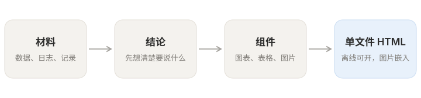
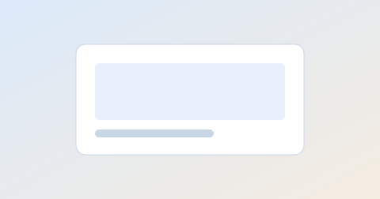

组件目录
🧭 用途
这份页面是 Gallery 的组件目录。每个示例都是能直接运行的真实标记：导出后文件里的样子，用来看每个组件长什么样、能做什么。
🧩 内容分区
- 正文：页面结构、标题段落与列表、行内颜色、公式、代码、提示框、高亮块、分栏、折叠块和详情卡片。
- 图像：页面自己定义的图表类型、从表格画的图、交互的图表和示意图，以及卡片的宽度与配色。
- 表格：自动列宽、数值对齐、固定首列的宽表和可排序的数据表。
- 状态：保存在浏览器里的备忘录、标注和筛选，筛选、表格与从表格画的图的联动，以及分页本身。
📐 写法说明
- 标记：不用照抄这里的标记。写报告时按 references/writing-html.md 写普通 HTML，导出会把它写成这样的标记；各组件的选项见组件卡片。
- 数据：示例里的数值、名称和路径都是虚构的，只用来演示组件。
- 结构：这里按组件分区；报告按读者的阅读任务组织，只用需要的组件。
页面结构
一份报告只有一个 main.doc-page：先是页眉（标题，标题上方可以放一个表情作页面图标 .doc-icon，标题下面最多一行小字，例如来源），然后是开头概括块，再往下是正文。正文、图表和表格共用同一个 712px 的阅读宽度，读者可以在右上角切换成全宽。
正文可以分成分区：一个分区是一个 section.doc-section，里面都是普通的块。标题和分割线也只是普通的块，按需要加：这一页的各节都以一个二级标题开头，除了每页的第一节，标题上方还有一条分割线（<hr>）。短报告或特殊版式也可以不分区，把正文直接写在页面或分页里。只写一个标题不会让它变成分区。
开头概括块是放在最前面的高亮块，在正文和结论定下来之后再写。它用三个以上的短名词标题分段，每段是一小段话，或几条“标题：内容”形式的列表。
标题、段落与列表
正文用普通的语义标签，不需要额外的 class。强调用加粗；文件名、字段和短命令用行内代码，例如 report.html；页内链接可以指向别的章节，例如公式。
三级标题
章节里的小节用三级标题，再往下用四级标题。
四级标题
- 保留材料里的单位、时间和比较范围。
- 结论之后给出可以核对的证据。
- 必要时写明文件名、任务 ID 或检查点。
- 读取原始材料。
- 确认口径与分母。
- 生成并检查独立 HTML。
列表的符号和编号统一画成蓝色，层级越深依次换成空心圆、方块和 a.、i.。编号列表可以用 start 从别的数字开始；被段落隔开后要接着编号，就写 data-continue。编辑时点一下编号，可以选择继续之前的编号、开始新列表或修改编号值。
引用块保留来源的原话或定义，不当作提示框用。
文字可以标颜色：红色、绿色、蓝色，也可以加底色：黄色、蓝色。颜色跟随浅色和深色主题；预览编辑器的格式条写的就是这些 class。
这一行是 .doc-note：用于简短的标注，例如单位、范围或来源，不写成解释性的段落。
公式
公式写成 LaTeX，由内置的 KaTeX 渲染。行内公式嵌在句子里，例如 \(\Delta = S_e - S_b\)；行间公式单独成块，窄屏时在自己的区域里横向滚动。
单个美元符号默认不是公式分隔符，因为报告里常有 $1.84 这样的金额。
代码
代码块上方是它的标题；不写 data-language 时自动识别语言：标题写文件名时按扩展名，否则按代码本身判断。代码离线高亮，保留原始缩进，长行自动换行（写了 doc-code--nowrap 的在框内滚动）。标题栏右侧显示语言（编辑时点它可以改选），可以切换自动换行、复制代码，左侧的箭头把代码块折叠成只剩标题栏；写了 doc-code--folded 的代码块默认折叠。行号左侧的三角（和标题栏的折叠三角同一列）折叠一段结构（大括号里的内容、Python 的函数体、HTML 元素等），data-folded-lines 写上行号的那几行默认折叠。
export function score(values: number[]): number {
// 用平均值汇总本次结果
if (values.length === 0) return 0;
return values.reduce((sum, value) => sum + value, 0) / values.length;
}展示一次修改时用代码对比 .doc-diff：标题写文件名，改动的行以 JSON 写在里面，每行是新增、删除或不变，可以带原来的行号；标题栏自动显示增减了几行。
提示框与高亮块
提示框只用于会改变理解的风险、状态或关键口径，一份报告里很少出现。
口径提醒：第 3 周起每周样本从 1,280 条增加到 1,536 条，前后两段的平均值不能直接比较。
高亮块用底色把一组相关内容和正文分开，里面的写法和正文一样，同样少用。
本次评测范围
- 三个候选实验和一个共同基线，都取最新检查点。
- 每个实验 1,280 道题，题目和评分脚本相同。
分栏
分栏把几块内容左右并排：.doc-columns 里放两到五个 .doc-column，每一栏里的写法和正文一样，段落、列表、图表卡片和表格都可以放。各栏默认等宽；要不等宽时每一栏都写 --doc-column-ratio（这一栏占整行的比例，合起来是 1）。窄屏时各栏上下排列。
改动前
- 检索结果按时间排序，近期材料容易被旧材料淹没。
- 每次评测都要手工合并三份日志。
改动后
- 检索结果先按相关度排序，同分时再看时间。
- 评测脚本直接读三份日志，输出一张汇总表。
在预览里，把一块拖到另一块的右侧或左边沿，两块就并排分栏；拖到某一栏的边上，就在那里加一栏。块菜单“分区与分栏”里的“分两栏”“分三栏”“分四栏”把这一块放进第一栏，旁边是新的空栏。一栏的内容全部移走后这一栏自动去掉，只剩一栏时恢复成普通正文。
图片
图片放在报告自己的文件夹里（assets/），写成 figure.doc-image：里面一张图片和一行说明（<figcaption>，没有说明时留空）。图片默认按自己的宽度居中，最宽和正文一样宽；要固定宽度时写 --doc-span（占正文宽度的比例），靠左或靠右加 doc-image--left 或 doc-image--right。导出的单个 HTML 文件里，图片直接嵌在文件中。

在预览里，用“/”菜单里的“图片”插入：上传本地图片，或粘贴图片链接（链接里的图片会下载到报告文件夹）。鼠标移到图片上，右上角是对齐、标题、全屏和更多操作，两侧的把手拖动改宽度；截图可以直接粘贴成一张图片。
文件
原始数据、完整日志这类给读者另存的材料写成文件块：文件放在报告文件夹的 assets/ 里，figure.doc-file 里一个链接（download 写另存时的文件名，里面是文件名和大小）和一行说明。点一下就把文件存到本地；导出的单个 HTML 文件里，文件也直接嵌在文件中。
在预览里，用“/”菜单里的“文件”插入：选择本地文件（最多 20 MB），或粘贴文件链接（文件会下载到报告文件夹）。直接粘贴一个不是图片的文件，也会变成文件块。
网页书签
要读者去看的网页写成网页书签：一张卡片，左边是网页的标题、描述和网址，右边是网页的封面图，点开在新标签页打开。网页的图标和封面图存在报告文件夹里，导出时嵌入文件；网页本身还在网上。

图片、文件和网页书签都写成 figure。
在预览里，用“/”菜单里的“网页书签”插入：粘贴网址，点“创建书签”，预览会去读那个网页，取回标题、描述、图标和封面图。
嵌入
要读者在报告里直接操作的网页或小工具写成嵌入：一个框里显示网页（只能是 https 网页，导出后要联网才能看到），或者报告文件夹里的 HTML、PDF 文件（导出时嵌进文件，离线也能看）。HTML 文件在隔离的框里运行，碰不到报告本身。框的高度用 --doc-embed-height 设定。
上面是一个嵌入的小工具：拖动滑块，样本量跟着变。
在预览里，用“/”菜单里的“嵌入”插入：粘贴网页链接（不允许被嵌入的网页会改成网页书签），或上传 HTML、PDF 文件。拖动框底部的把手改高度。
折叠块与详情卡片
长 Case、完整的问答记录和代码放进折叠块。它默认收起，内容必须完整；摘要写清楚里面是什么，不写“更多”。
查看完整示例 Case
问题
某实验得分为 51.60，共同基线为 49.80。实验相对基线提升多少分？
标准答案
提升 1.80 分，计算为 51.60 − 49.80 = 1.80。
系统回答 A
实验相对基线提升 1.80 分。
系统回答 B
提升约 1.8%，因为 51.6 − 49.8 = 1.8。
问题说明
回答 B 的数值计算正确，但单位错误：这里比较的是两个分数的差值，应表述为“1.80 分”，不能写成百分比。
查看这道题的评测记录 case-0412.json
{
"case": "case-0412",
"question": "某实验得分为 51.60，共同基线为 49.80。实验相对基线提升多少分？",
"reference": "1.80 分",
"responses": { "A": "1.80 分", "B": "约 1.8%" },
"verdict": { "A": "correct", "B": "wrong-unit" }
}查看各数据集的检查记录
折叠块里的宽表同样按内容分配列宽，放不下时在自己的区域里横向滚动。
| 数据集 | 材料路径 | 数据范围 | 版本 | 样本数 | 字段数 | 覆盖率 | 检查状态 | 备注 |
|---|---|---|---|---|---|---|---|---|
| finance-reasoning-multidocument-long-context-v2026-08-25 | /datasets/finance/reasoning/multidocument/long-context/validation-set.jsonl | 金融研报与公告的多文档推理 | 2026.08.25 | 1280 | 46 | 98.7% | 检查完成 | 保留来源定位与完整问题链路 |
| professional-information-analysis-and-reasoning-specialized | /datasets/professional-information-analysis/reasoning/full-cases.jsonl | 专业信息分析与推理完整 Case | 2026.08.23 | 944 | 38 | 96.4% | 检查完成 | 长名称和路径可在任意位置换行 |
| benchmark-evidence-with-mixed-identifiers | https://example.invalid/datahub/benchmark/evidence/items/latest-snapshot | 表格、代码标识符与混合字段 | 2026.08.20 | — | 29 | 待补充 | 等待来源 | 混合内容列保持左对齐 |
正文里某个名词的补充说明放进详情卡片：把名词写成指向卡片的链接，例如数据集 Atlas-Bench，点开后卡片浮在页面上方。
自己的图表类型
图表是卡片里的声明：数据以 JSON 放在卡片里，类型由页面自己的脚本用 DocCharts.define 定义一次，同一类型可以画很多张。共享脚本负责宿主、主题颜色、宽度和卡片高度，宽度、主题或卡片高度变化时重画。每张卡片的说明行写着它的类型。
每周请求量
类型 bars · 单位：千次
各时段 P95 延迟
类型 trend · 虚线为 200 ms 的 SLO
月度收入
类型 bars · 卡片高度 246px · 单位：万元
各题得分分布
类型 score-strip · 每个点是一道题 · 单位：分
从表格画的图
数据已经在表格里时，图表直接读表格：表格的外框写 data-doc-chart-source="键"，卡片里的图表宿主写同一个键 data-doc-chart-data="键"，不再写 JSON。图表类型拿到的数据是表格的行：每行一个对象，按表头的文字取值，数字读成数字。在预览里改表格里的数，图跟着重画。
| 渠道 | 请求量（千次） |
|---|---|
| 开放 API | 498 |
| 内部 Agent | 482 |
| 批量任务 | 316 |
| 交互式查询 | 264 |
各渠道总请求量
类型 table-bars · 数据是上面表格的行
交互的图表
需要自己的按钮、计时器或监听器的图表，定义成部件：DocCharts.define(类型, { mount })。mount 在宿主里画出图和按钮，返回 update（宽度、主题或卡片高度变化时调用）；宿主离开页面时 signal 中止，部件挂的监听器随之移除。
两个渠道的每周请求量
类型 series-toggle · 点按钮只看一个渠道 · 单位：千次
示意图
不是数据图的图（结构、流程、时间线）用页面自己的 HTML、CSS 或 SVG 画，放进卡片 figure.doc-figure：卡片负责边框和底色，里面不再画第二层外框。SVG 的 <defs> 里的 id 带上这张图自己的前缀，两张图不重名。
分层结构
页面自己的 HTML 和 CSS
报告
读者打开的页面
组件
表格、图表、卡片
共享脚本
绘制、主题和状态
流程箭头
页面自己的 SVG · 箭头是 <marker>
卡片宽度与配色
几张卡片并排时放进分栏，一栏一张：两张分两栏，三张分三栏，窄屏时上下排列。只有一张简单的图时用 .doc-figure--compact，它单独占一行并居中。读者在预览里拖动卡片边缘改宽度和高度，写进卡片的 --doc-span 和 --doc-chart-height；拖动栏间的竖线改栏宽，写进各栏的 --doc-column-ratio。
每日活跃用户
.doc-figure--compact · 类型 trend
系列颜色按顺序取默认的六色序列，浅色和深色主题各有一套。图表类型从 tokens.series 取这些颜色，不写死色值。
| 系列 | 浅色主题 | 深色主题 |
|---|---|---|
| Series 1 | #3C9BC9 | #73BDE0 |
| Series 2 | #ED8D5A | #F2AA82 |
| Series 3 | #6E9F69 | #447542 |
| Series 4 | #927AB8 | #B4A0D2 |
| Series 5 | #C04848 | #FC6B83 |
| Series 6 | #65BDBA | #89D1CE |
普通表格
表格只写表头和单元格，放在 .doc-table-wrap 里；不写列宽，也不写对齐用的 class。共享脚本按内容测量列宽，识别纯数字列，让它居中并可以排序。
自动列宽
模型和分数保持单行，路径和说明按内容宽度分配空间、平衡换行；页面宽度变化时各列比例会重新分配。
| Model | Score | Source | Description |
|---|---|---|---|
| Model A | 92.5 | /datasets/finance/benchmark-v1/results.jsonl | 结合多份材料中的证据回答问题，并完整保留推理过程，方便读者核对结论与来源。 |
| Model B | 88.0 | https://example.invalid/benchmarks/analysis/latest | 识别长文档里的关键信息，综合不同章节的数据进行比较，说明差异及其适用范围。 |
| Model C | 90.2 | /datasets/reasoning/validation-set.jsonl | 分析表格与正文之间的关系，保留原始单位和统计口径，并给出能够追溯到材料的回答。 |
结果表
四列及以下的短表按自然宽度靠左显示，五列及以上铺满阅读宽度。表格上方用一行小字写范围和单位：在小字里按 Tab，后面的字放到这一行的右端。
范围：四个实验 · 最新检查点单位：分
| 实验 | 训练说明 | 综合得分 | 相对基线 | 样本数 |
|---|---|---|---|---|
| 候选 A | 增加专业资料 | 49.80 | +2.60 | 1,280 |
| 候选 B | 增加结构化数据 | 48.90 | +1.70 | 1,280 |
| 候选 C | 调整自然配比 | 47.90 | +0.70 | 1,280 |
| 共同基线 | 统一比较基准 | 47.20 | 0.00 | 1,280 |
数值组合
斜线分隔的两组数值仍算纯数值，字段和单元格居中；含普通文字的列左对齐。
| 统计范围 | 通过 / 未通过 | 召回率 / 精确率 |
|---|---|---|
| 验证集 | 95 / 42 | 114.91% / 50.56% |
| 测试集 | 88 / 37 | 96.70% / 48.20% |
宽表与固定首列
放不下的宽表在自己的区域里横向滚动，不压缩文字。打开标题列（每一行的第一格是行标题），实验名称固定在左侧，读者横向滚动时仍知道每行是谁。需要突出某一行时，给这一行的单元格设底色，例如这里的候选 A。
范围：六个实验 · 十八个指标横向滚动 · 标题列固定
| 实验 | 专业知识 | 基础知识 | 语言理解 | 数学 | 推理 | 代码 | 金融综合 | 金融知识 | 金融推理 | 金融计算 | 金融长窗口 | 长上下文检索 | 多文档推理 | 表格理解 | Agent 执行 | 事实核验 | 成本效率 | 宏平均 |
|---|---|---|---|---|---|---|---|---|---|---|---|---|---|---|---|---|---|---|
| 候选 A | 51.2 | 47.8 | 76.4 | 54.7 | 60.5 | 53.8 | 51.6 | 54.2 | 49.7 | 52.3 | 16.5 | 61.8 | 58.4 | 63.2 | 55.7 | 69.1 | 72.4 | 57.9 |
| 候选 B | 49.9 | 46.8 | 75.6 | 52.1 | 59.8 | 50.7 | 50.8 | 53.1 | 48.9 | 51.7 | 16.1 | 60.4 | 57.9 | 61.8 | 54.2 | 67.8 | 75.1 | 57.3 |
| 候选 C | 48.7 | 45.9 | 74.8 | 50.6 | 59.1 | 49.5 | 49.9 | 52.6 | 48.1 | 50.4 | 15.8 | 59.6 | 56.8 | 60.9 | 53.5 | 66.9 | 73.8 | 56.5 |
| 网页来源 | 47.9 | 45.4 | 73.9 | 49.8 | 58.7 | 48.6 | 50.1 | 51.8 | 47.6 | 51.0 | 15.4 | 58.9 | 55.7 | 59.8 | 52.6 | 65.7 | 74.6 | 55.9 |
| 研报来源 | 48.2 | 46.1 | 74.5 | 49.2 | 58.9 | 48.0 | 51.4 | 54.0 | 49.3 | 52.0 | 16.4 | 59.2 | 57.1 | 61.4 | 54.8 | 67.2 | 70.9 | 56.6 |
| 共同基线 | 46.8 | 44.7 | 72.9 | 47.5 | 57.8 | 46.2 | 48.7 | 50.9 | 46.8 | 49.6 | 14.9 | 57.1 | 54.6 | 58.7 | 51.3 | 64.2 | 71.6 | 54.8 |
排序
纯数字列自动可以排序；点击表头切换方向，空值总在最后，相同的值保持原来的顺序。其余的用属性说明：data-sort-type="text" 让文本列也能排序，data-sort-default 设打开时的排序，data-sort-value 给格式化过的单元格一个数值，data-sort-ignore 让某列不参与排序，data-sort-rank 的列在排序后重新编号。行序本身就是信息（时间线、步骤、排名）、读者排序会造成误解时，在表格上写 data-doc-table-static，读者就不能排序。
七个可排序字段打开时按综合得分降序
| 排名 | 模型 | 提供方 | 综合得分 | Exact Match | Pass@1 | 平均 Tokens | 成本 / 题 |
|---|---|---|---|---|---|---|---|
| 1 | Model Aurora | Provider A | 88.7 | 74.1% | 82.3% | 18,420 | $1.84 |
| 2 | Model Birch | Provider B | 86.9 | 72.8% | 80.6% | 14,210 | $1.26 |
| 3 | Model Cinder | Provider C | 84.5 | 70.4% | 79.2% | 22,190 | $2.41 |
| 4 | Model Delta | Provider A | 82.8 | 68.7% | 76.4% | 11,980 | $0.92 |
| 5 | Model Elm | Open Model | 80.6 | 66.2% | 74.8% | 16,340 | — |
| 6 | Model Fjord | Provider D | 78.9 | 65.3% | 71.7% | 9,870 | $0.61 |
| 7 | Model Grove | Open Model | 76.4 | 61.9% | 69.5% | 12,880 | — |
| 8 | Model Haze | Provider B | 75.8 | 61.1% | 68.8% | 13,760 | $1.08 |
| 9 | Model Iris | Provider E | 74.9 | 60.4% | 67.9% | 10,840 | $0.74 |
| 10 | Model Juniper | Open Model | 73.7 | 59.8% | 66.5% | 17,120 | — |
| 11 | Model Kestrel | Provider A | 72.8 | 58.6% | 65.7% | 12,460 | $0.88 |
| 12 | Model Lumen | Provider C | 71.9 | 57.9% | 64.8% | 19,680 | $1.72 |
| 13 | Model Morrow | Provider D | 70.6 | 56.8% | 63.6% | 9,350 | $0.57 |
| 14 | Model Nimbus | Open Model | 69.8 | 55.9% | 62.4% | 15,330 | — |
| 15 | Model Onyx | Provider E | 68.5 | 54.7% | 61.2% | 11,640 | $0.81 |
| 16 | Model Prairie | Provider B | 67.4 | 53.8% | 60.1% | 14,490 | $1.17 |
| 17 | Model Quartz | Provider C | 66.2 | 52.6% | 58.9% | 18,370 | $1.58 |
| 18 | Model Rowan | Provider A | 65.1 | 51.7% | 57.6% | 10,220 | $0.69 |
| 19 | Model Solace | Open Model | 63.8 | 50.3% | 56.4% | 16,810 | — |
| 20 | Model Timber | Provider D | 62.7 | 49.6% | 55.2% | 8,750 | $0.49 |
浏览器里的阅读状态
读者在页面上留下的东西（备忘录、筛选）用 data-doc-bind="键" 声明，不需要脚本：控件的值写进这个键，键的值显示在控件上；data-doc-show="键:值" 的元素只在键是这个值（或者为空）时显示。这些键自动保存在当前浏览器里，每份报告各存各的，也写进“导出当前视图副本”；带 data-doc-transient 的键只在当前页面有效，重新打开时回到默认。
备忘录与临时输入
备忘录自动保存在当前浏览器里；临时输入重新打开时清空。
筛选
- 图表：检查坐标轴文字
- 示意图：箭头指向正确
- 导出文件：确认离线打开
每一组的标题是普通标题块，控件是整体块：输入框一块，筛选按钮和它筛选的结果合成一个筛选块（.doc-filter），在预览里整块移动，里面的写法由报告决定。
图表与表格联动
筛选和表格用同一个键联动，不需要脚本：下拉框写 data-doc-bind="series"，表格的每一行写 data-doc-show="series:系列"，选一个系列，表格只留它那一行。左边的图从这张表格画（data-doc-chart-data），在预览里改表格里的数，图跟着重画。表格的排序也可以绑定到一个键（data-doc-bind 写在表格上）。
按周请求量
| 系列 | 合计 |
|---|---|
| API | 262 |
| Agent | 176 |
分页
这一页的四个分页就是 Sheet 组件：每个分页标签对应一个面板，面板是标签栏的兄弟元素，标签和面板用同一个键配对。分页区自己启动，不需要脚本；选中的分页按它的名字（data-doc-sheets="gallery"）记在当前浏览器里，重新打开时回到上次看的那一页。标签栏滚出视口后，右侧会出现一列竖向的标签。